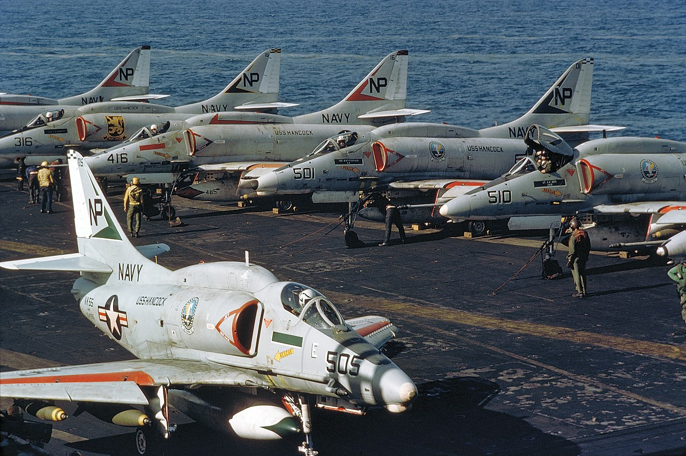
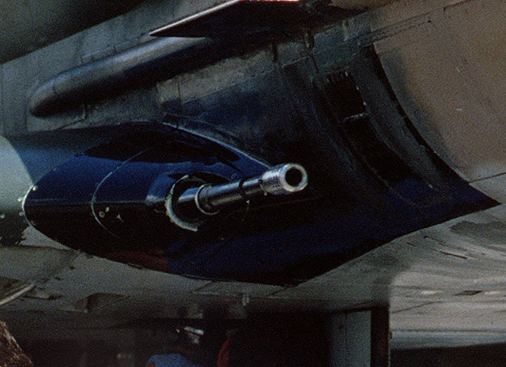
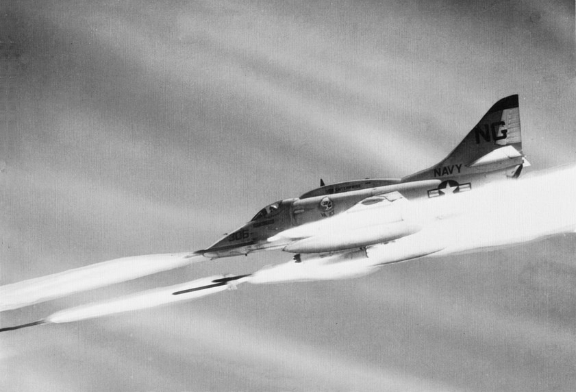
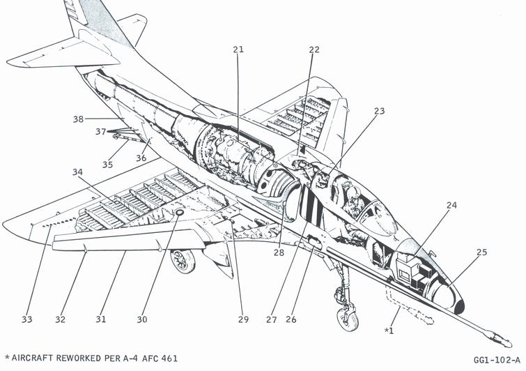
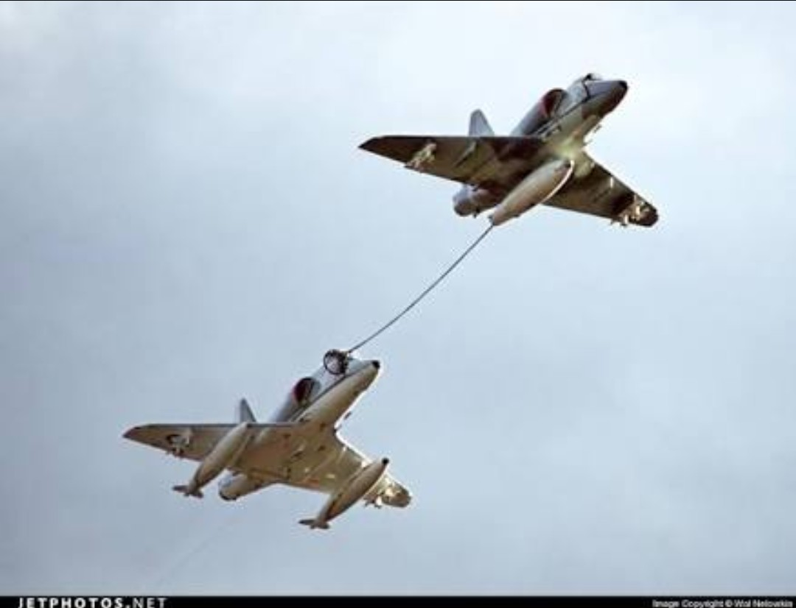
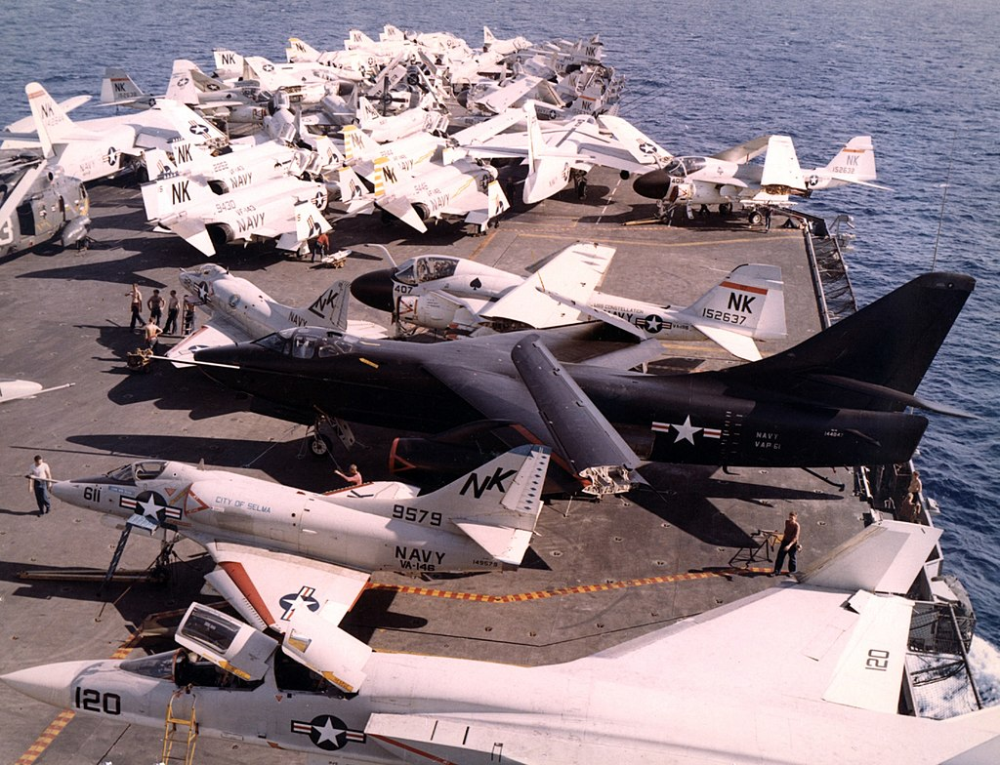
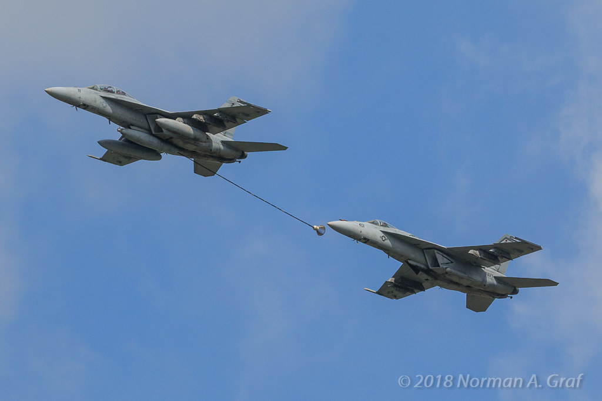
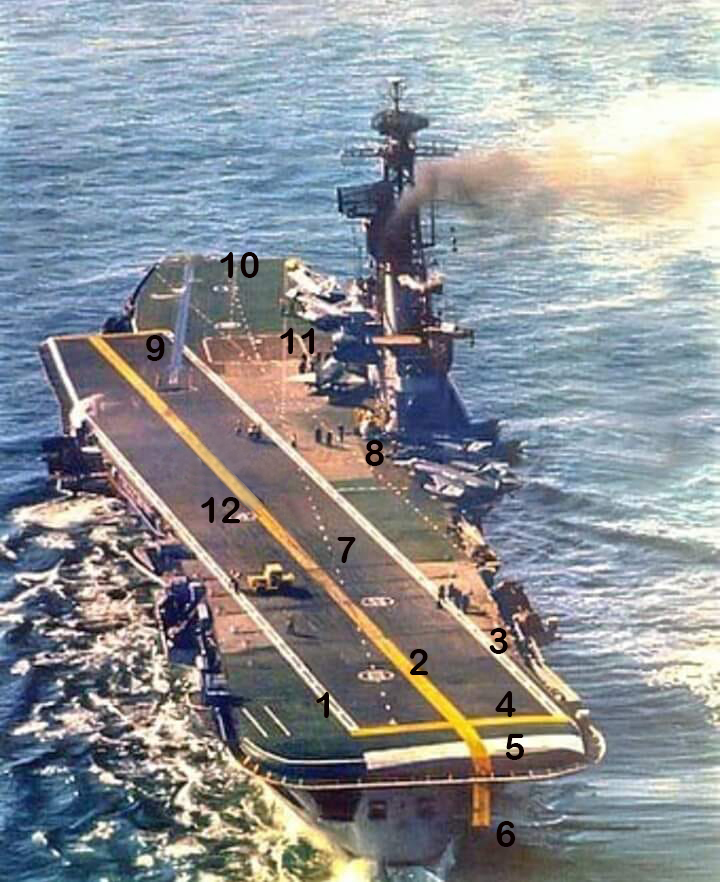
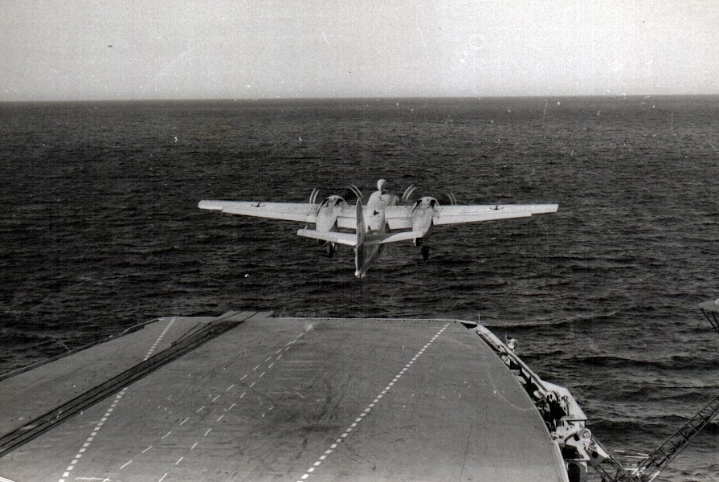
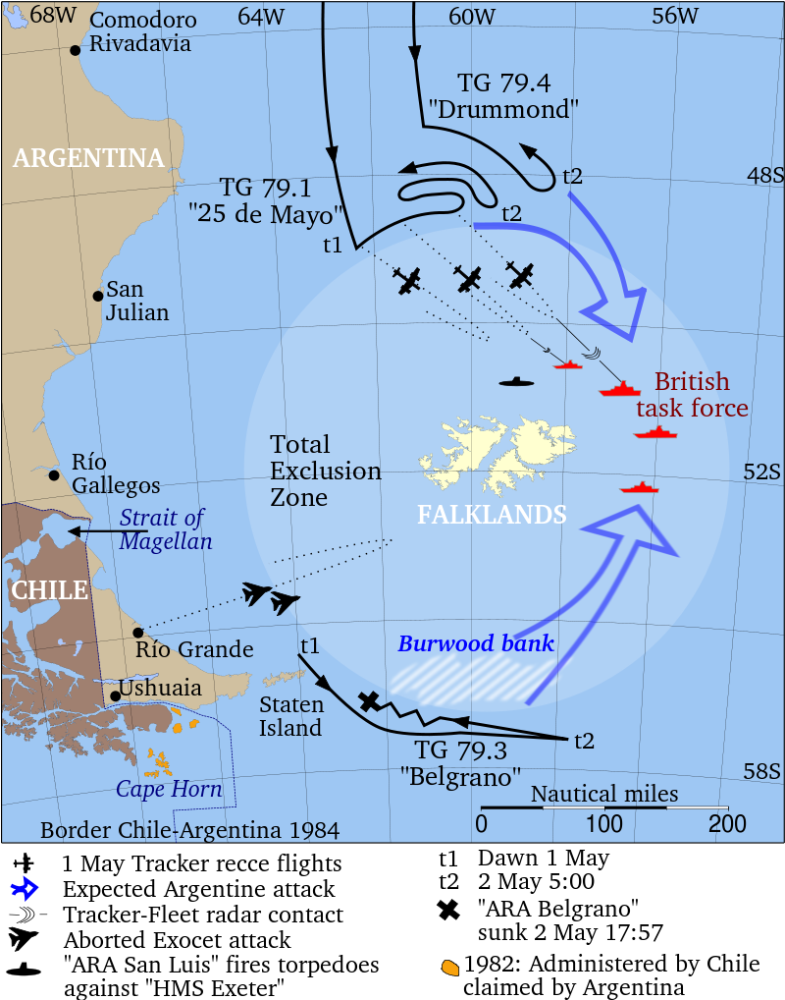

포클랜드 전쟁 잡담 - 스카이호크 이야기
게시: 2021-12-30T06:30:55+09:00
<스카이호크의 승리> 월남전과 포클랜드 전쟁에서 맹활약한 A-4 Skyhawk는 원래 최후의 프로펠러 공격기 A-1D Skyraider를 대체하기 위해 만들어진 경공격기로서 원래 제식번호도 A-4D. 워낙 설계가 잘 되어 크기가 작아 함재기인데도 날개를 접지 않아도 되고 그러다보니 구조도 단순하고 그러다보니 가볍고 게다가 결정적으로 가격도 쌈. 다만 1950년대에 설계된 기체답게 초음속도 못내고 폭장량도 아쉬웠고 레이더를 비롯한 전자장비도 없었기 때문에 결국 F-8 Crusader를 기반으로 설계된 A-7 Corsair로 점차 대체됨. 스카이호크는 1950년대 설계답게 기총이 동체가 아니라 날개에 붙어있는데, 심지어 WW2 당시 영국제 전투기에서 주로 쓰던 Hispano HS 404를 개조한 Colt Mk 12 20mm cannon(사진2)을 장착. 근데 이 기총은 명중률도 떨어지고 무엇보다 고장과 탄막힘이 자주 발생. 게다가 1정당 장탄수가 100발에 불과. 1초에 16발 정도를 발사했으므로 2초씩 딱 3번 당기면 끝. 스카이호크는 탐 크루즈 주연의 영화 Topgun에서 가상적기로 등장하듯이 (실제로 Topgun school에서 그렇게 썼음) 공격기치고는 굉장히 기동성이 좋아서 전투기 못지 않은 선회력을 자랑했는데, 그 덕분에 Colt Mk 12 기총에서 더욱 자주 탄막힘이 발생. 그래서인지 장탄수 부족 때문인지 1967년 5월, USS Bon Homme Richard에서 날아오른 스카이호크가 MiG-17을 격추할 때 사용한 무기는 기총도 아니고 사이드와인더도 아닌 무유도 Zuni 5인치 로켓 (사진3). 이것이 베트남전에서 스카이호크가 거둔 유일한 공대공 kill.
  
<스카이호크의 용기> 아르헨티나는 미국을 제외하고는 A-4 Skyhawk를 가장 먼저 사용한 국가. 그러나 아르헨티나가 1966년부터 도입한 스카이호크들은 대부분 A-4B/C 모델들이었는데 B모델에는 아무런 레이더도 없었고 C모델에도 야간 저공비행을 위한 terrain radar만 장착됨. 그나마 레이더 없이 쏠 수 있는 AIM-9B 사이드와인더 미사일을 장착할 수 있어서 공대공 능력도 보유. 정말 현대적인 전자장비 없이, 엔진만 제트 엔진으로 바뀌었고 사이드와인더를 쏠 수 있다 뿐이지 WW2 당시 전투기들과 별반 다를 바 없는 공격기로서, 레이더 조준 경고 장치도 없고 적외선 미사일 교란을 위한 flare도 없고 레이더 교란을 위한 chaff도 없음. 심지어 다른 분쟁으로 인한 미국의 제재 때문에 부품이 없어 사출좌석이 고장난 기체도 많았음. 그런 상태로 1982년 포클랜드 전쟁 때 멍텅구리 폭탄을 달고 영국 함대로 날아가, 눈 짐작으로 폭탄을 던져서 당시 로열 네이비 최신예 Type 42 구축함인 HMS Coventry을 비롯하여 Type 21 프리깃함인 HMS Ardent, HMS Antelope 등을 격침시키고 기타 여러 함선들에게 큰 피해를 입힘. 그야말로 폭탄 떠안고 부칸군 탱크에게 육탄 돌격했던 셈. 그래서 포로로 잡힌 스카이호크 조종사들에게 영국 해군 조종사들은 대단한 사람들이라고 칭찬했다고. 포클랜드 전쟁 기간 중 총 22대의 Skyhawk가 상실되었는데 8대는 해리어기에게 당했고 7대는 군함의 대공 미사일, 4대는 지상 발사 대공 미사일 및 대공포에 격추됨. 3대는 사고로 추락.

<폭탄 달고 날아오르는 것이 쉽지 않더라> 짧은 항공모함 갑판에서 함재기가 이함하는 것은 의외로 매우 어려운 일. 특히 연료와 무장을 가득 채운 채 그러는 것은 항상 아슬아슬한 일. 그냥 스펙상 싣게 되어있는 연료와 무장만 실으면 되는 거 아닌가 싶지만 그런 스펙도 모든 조건이 완벽할 때를 가정한 것이라서 항상 최대치가 허용되는 것이 아님. 바다 위에 바람이 얼마나 부는지에 따라서도 다름. 이건 최신 기종인 F-35B도 마찬가지이고, F-35B도 갑판 위에 수직 착륙할 때 허용되는 탑재 연료와 무장량이 여름이냐 겨울이냐에 따라 달라질 정도. A-4 스카이호크의 경우 흔히 WW2 당시의 B-17 폭격기와 동일한 폭장량을 가진다라고 하지만, B-17 자체의 폭장량도 장거리 임무라서 연료를 많이 실어야 할 때는 2톤, 단거리 임무라서 연료를 적게 실어도 될 때는 3톤이었음. 스카이호크도 연료를 가득 채우느냐 적게 채우느냐에 따라 매달고 올라갈 수 있는 폭탄의 양이 늘어날 수도 줄어들 수도 있음. 그리고 짧은 비행갑판이 아니라 그냥 넉넉하게 긴 지상 활주로라면 연료든 폭탄이든 1톤 가량 더 싣고 이륙할 수도 있음. 따라서 스펙상으로는 500파운드(227kg)짜리 MK-82 폭탄을 9발까지도 달고 이함할 수 있다지만, 그러려면 (1) 연료는 최소량만 싣고 (2) 맞바람은 최대한으로 받고 (3) 항모가 한 30노트의 속력으로 죽어라 달려야 가능. 무엇보다 (1)번 항목, 즉 연료를 최소량만 실을 경우 대개 목적지까지 날아갈 수가 없으므로 불가능. 그래서 미해군에서는 스카이호크의 최대 폭장량을 유지하기 위해 "buddy" air-to-air refueling(사진1)이라는 것을 개발. 먼저 아무 무장도 달지 않고 커다란 특수 drop tank만 매단 스카이호크가 이함. 그 뒤를 이어 연료는 최대이륙중량이 허용하는 만큼만 넣고 폭탄을 주렁주렁 매달고 이함. 그리고난 뒤에 하늘 위에서 먼저 이륙했던 buddy를 만나 그 drop tank에서 나오는 fuel hose에서 공중급유를 받는 식. 다만 이 방식은 전투 목적으로 운용할 스카이호크 숫자에 제약을 주었기 때문에, 함재 폭격기로서는 실패작이었던 '고래' A-3 Skywarrior가 함재 급유기 KA-3 Skywarrior로 재탄생한 뒤로는 거의 사용되지 않음. ** 사진2의 시커멓고 커다란 기체가 A-3. 단 이것은 KA-3가 아니라 장거리 정찰용인 RA-3. ** 사진3은 KA-3가 퇴역하는 바람에 다시 이짓거리를 하고 있는 FA-18. 이짓거리를 하지 않으려고 무인기 MQ-25 Stingray를 개발하여 시험 중.
  
<바람만 좋았다면> WW2가 끝난 이후 인류는 단 한 번도 항모 vs. 항모 전투를 경험하지 못함. 그러나 포클랜드 전쟁 때 하마터면 거의 그런 전투가 벌어질 뻔 했음. 당시 아르헨 해군의 항모 ARA Veinticinco de Mayo(사진1)는 포클랜드 인근까지 접근한 영국 함대, 그 중에서도 HMS Invincible과 HMS Hermes를 타격하기 위해 벼르고 있었음. 특히 조기경보기(AEW)가 없던 로열네이비의 항모들과는 달리, 아르헨 해군의 베인티싱코 데 마요는 증기 캐터펄트로 고정익기를 이함시키고 어레스팅 기어로 착함시키는 CATOBAR 방식의 항모라서 대잠용 정찰기인 S-2 Tracker(사진2)들을 보유하고 있었음. 이것으로 공중 경계까지는 무리지만 최소한 넓은 해역을 정찰하며 적 함대를 찾을 수 있었음. 5월 1일, 부지런히 영국 함대를 찾던 S-2가 마침내 영국 함대를 포착하고 베인티싱코에게 알림. 베인티싱코에서도 멍텅구리 폭탄을 장착한 A-4Q 스카이호크들을 발진시키려 하였으나... 바람이 안 붐. 원래 베인티싱코는 1943년 진수된 경항모 HMS Venerable (1만3천톤, 25노트)였는데, 전쟁이 끝난 뒤 1948년 네덜란드 해군에게 팔려 HNLMS Karel Doorman이 됨. 그러다 1968년 아르헨 해군에게 팔려온 물건인데, 네덜란드 해군이 이걸 판매한 결정적인 이유는 해외 식민지 상실도 있지만 바로 1968년에 있었던 보일러룸 화재사건 때문. 사실상 망가진 배를 판 것인데, 이 때문에 베인티싱코는 한번도 이론상 속도인 25노트를 내보지 못했고 포클랜드 전쟁에서도 20노트에 못 미치는 18노트 정도의 속도만 냈음. 가뜩이나 프로펠러 함재기를 위해 설계된 항모에서 폭탄과 연료를 잔뜩 실은 제트기를 띄우려니 힘겨워 죽겠는데, 항모가 속도를 내지 못하니 맞바람이라도 제대로 받아야 함. 그런데 그날 따라 바람이 안 부네?? 결국 mission abort. 이후 순양함 벨그라노가 영국 원잠에게 꼬로록한 사건도 있고 해서, 이후 베인티싱코는 항구 밖으로 절대 나오지 않고 숨었고, A-4Q 함재기들은 아르헨 남단의 리오그란데 공군기지로 옮겨져 거기서 출격. 여기서는 아무 문제 없이 폭탄 4발 달고 여유있게 이륙했다고. 다만 포클랜드까지는 역시 워낙 멀어서 재급유를 받아도 연료가 간당간당했다고... 사진3은 당시 상황도.
  